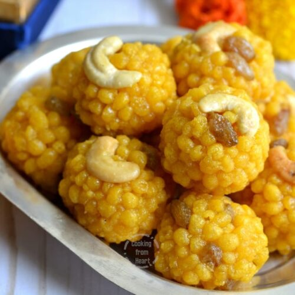
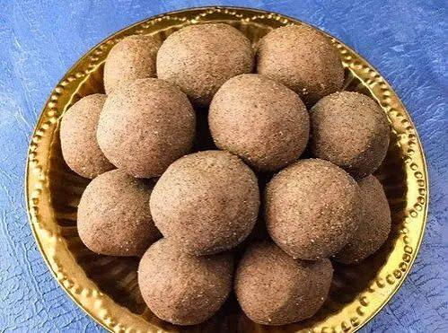
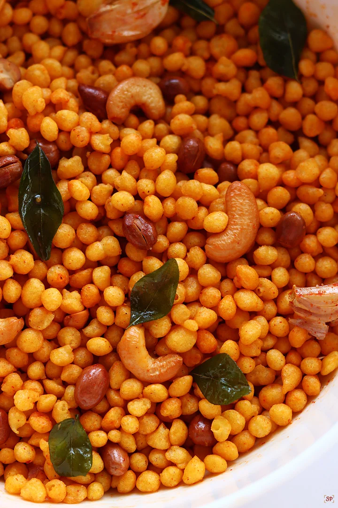
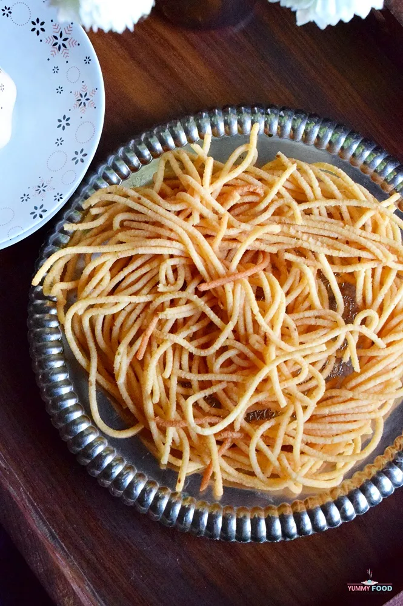

TRADITIONAL SWEET
Boondi Laddu
A traditional Indian sweet made with tiny golden boondi.
Ingredients
Gram Flour (Besan), Sugar, Sunflower Oil, Ghee, Cashew Nuts, Raisins, Cardamom, Baking Soda.
TRADITIONAL SWEETS & SAVOURIES
Homemade Taste. Made With Care.
Welcome to TulasiSyam Home Foods, your neighbourhood destination for traditional Indian sweets and savouries. Explore our products and get in touch to learn more.

A WARM WELCOME
At TulasiSyam Home Foods, we bring traditional Indian sweets and savouries together under one roof. Our aim is to offer a welcoming place where you can discover familiar favourites and share them with the people you love.
Whether you are looking for something sweet or a savoury snack, we invite you to explore our selection and contact us with your enquiries.
Discover our productsFROM OUR HOME-FOOD COLLECTION
Explore our selection of traditional sweets and savouries.
TRADITIONAL SWEET
A traditional Indian sweet made with tiny golden boondi.
Gram Flour (Besan), Sugar, Sunflower Oil, Ghee, Cashew Nuts, Raisins, Cardamom, Baking Soda.

TRADITIONAL SWEET
A beloved traditional sweet from Andhra cuisine.
Urad Dal, Jaggery, Ghee, Cardamom.

TRADITIONAL SAVOURY
A savoury Indian snack featuring small, crisp boondi.
Gram Flour (Besan), Rice, Sunflower Oil, Peanuts, Salt, Chilli Powder, Baking Soda.

TRADITIONAL SAVOURY
A traditional savoury snack enjoyed with tea or shared with family.
Gram Flour(Besan), Sunflower Refined Oil, Rice Flour, Sesame Seeds, Carom Seeds(Ajwain/Vamu), Chilli Powder, Salt, Turmeric powder.
For product enquiries and availability, please contact us directly.
WE'D LOVE TO HEAR FROM YOU
Have a question about our sweets and savouries? Reach out to us through your preferred contact channel.
Chat with us on WhatsApp